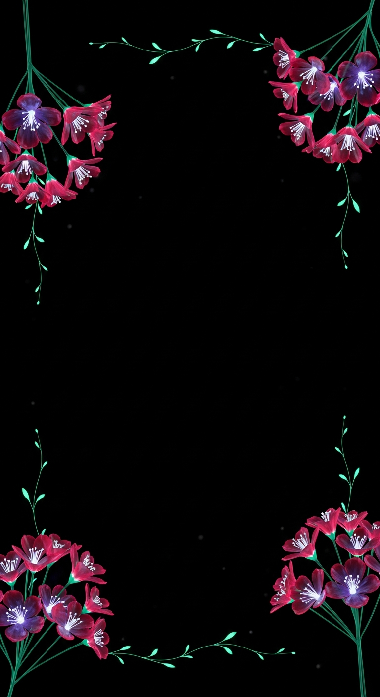
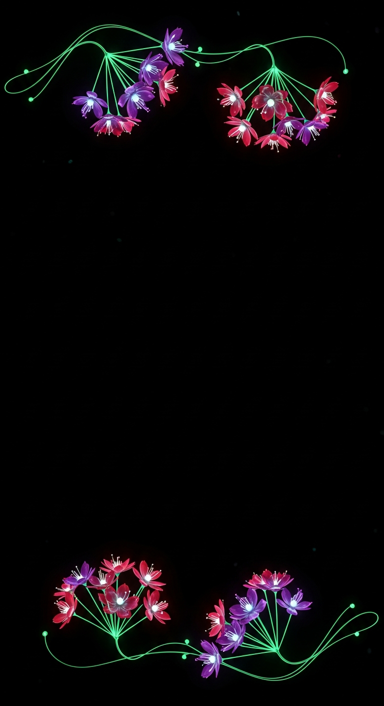
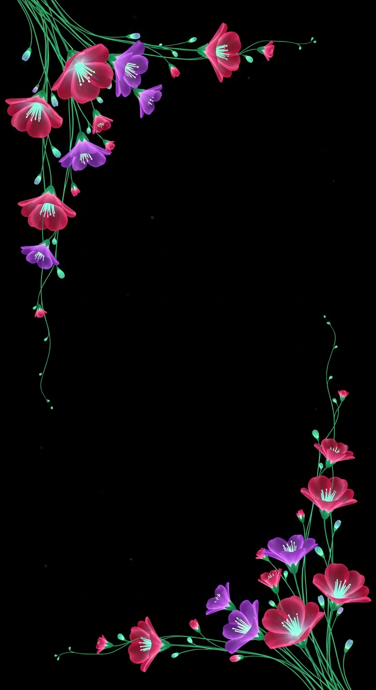
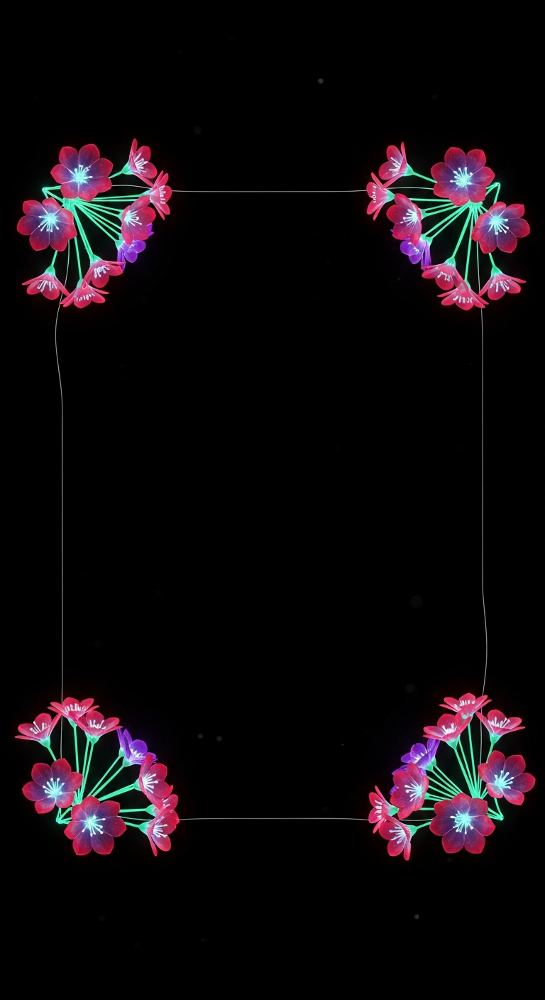
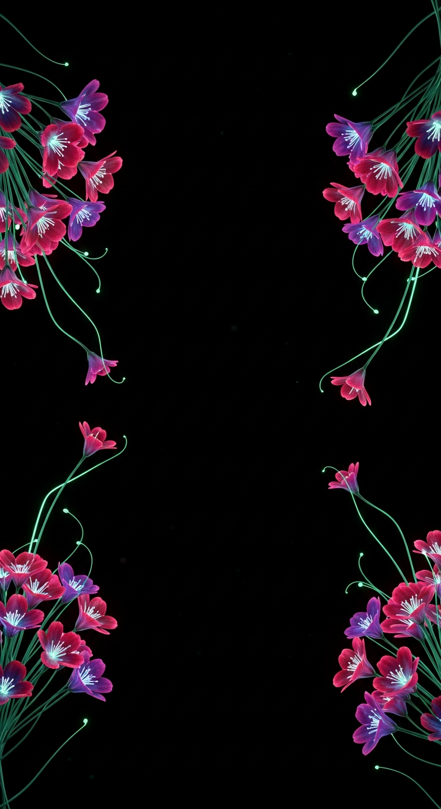

Your four-corner brand version, now with a thin connection tying the corners together — five different links, all kept delicate so the center stays open for text. Pick the connection you like and I'll finalize it (transparent-center overlay + animated WebM).
Say the one (e.g. "the full-vine border" or "the hairline") + any tweak — thinner / brighter connection · smaller corner blooms.

Thin vine links all four corners along every edge — a complete delicate frame.

Vines connect along the top and bottom only; sides open.

Vines run down the left and right edges; top & bottom open.

A fine glowing thread traces a rounded rectangle linking the corners — most refined.

Wisps stretch from each corner and almost meet — the most subtle link.